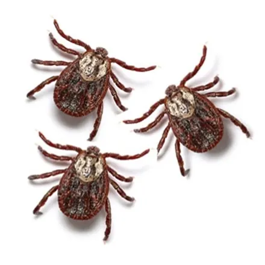
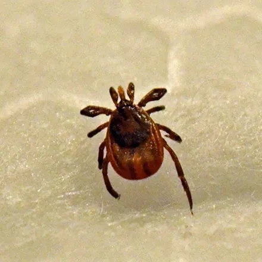
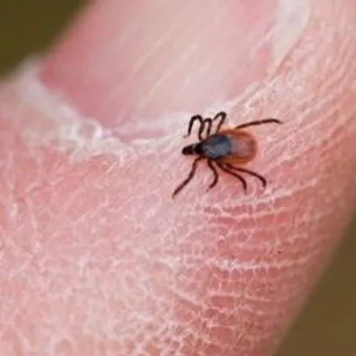

کنه یکی از خطرناکترین انگلهای خارجی برای انسان و حیوانات است؛ نه بهخاطر دردِ گزش، بلکه بهخاطر بیماریهایی که منتقل میکند. در استان البرز و حاشیه کرج که نگهداری دام و حیوانات خانگی و رفتوآمد به باغ و ویلا رایج است، آلودگی به کنه را باید جدی گرفت. در این راهنما شناخت انواع کنه، نشانههای آلودگی، بیماریهای منتقله، روش صحیح جدا کردن کنه از بدن و روند سمپاشی تخصصی کنه در کرج را بررسی میکنیم.
شناخت کنه و انواع رایج آن در ایران
کنه حشره نیست؛ از ردهٔ عنکبوتیان است و مثل عنکبوت هشت پا دارد. اندازه کنهٔ گرسنه معمولاً بین یک تا چند میلیمتر است، اما پس از خونخواری چند برابر میشود. کنه نمیپرد و پرواز نمیکند؛ در علفزار، بوتهها، لانه حیوانات و درز دیوارها کمین میکند و با تشخیص گرما و دیاکسیدکربن بدن، خود را به میزبان میچسباند. چرخه زندگی آن چهار مرحله دارد (تخم، لارو، نیمف، بالغ) و بسته به گونه از چند ماه تا چند سال طول میکشد.
کنهها به دو گروه اصلی تقسیم میشوند که تفاوتشان در عمل مهم است:
| ویژگی | کنه سخت | کنه نرم |
|---|---|---|
| ظاهر | سپر سخت روی پشت، بدن تخت | بدن چرمی و چروکیده، بدون سپر |
| محل زندگی | علفزار، بوتهها، بدن دام و سگ | لانه پرندگان و جوندگان، شکاف دیوار آغل |
| نحوه خونخواری | چند روز به میزبان چسبیده میماند | شبها سریع خون میخورد و جدا میشود |
| اهمیت در ایران | ناقل اصلی تب کریمه کنگو و بیماریهای دامی | ناقل تب راجعه در مناطق روستایی |
در خانهها بیشترین مشکل را کنه قهوهای سگ ایجاد میکند؛ گونهای که برخلاف بقیه میتواند تمام چرخه زندگی را داخل ساختمان بگذراند و در درزها و قرنیزها تخم بگذارد.
نشانههای آلودگی به کنه
- دیدن کنه چسبیده به پوست انسان، بهویژه پشت گوش، کشاله ران و زیر بغل پس از رفتن به باغ و طبیعت.
- مشاهده کنه روی بدن سگ و گربه (سر، گردن و لای انگشتان) یا خاراندن مداوم حیوان.
- حرکت کنهها روی دیوارهای حیاط، آغل و پارکینگ، مخصوصاً در فصل گرم.
- تجمع نقطههای ریز قهوهای در درز دیوار و سقف محل نگهداری دام و پرندگان.
خطرات و بیماریهای منتقله از کنه
مهمترین خطر کنه در ایران، تب خونریزیدهنده کریمه کنگو (CCHF) است؛ بیماری ویروسی جدی که از راه گزش کنه آلوده یا تماس با خون و لاشه دام آلوده منتقل میشود و به همین دلیل وزارت بهداشت هر سال درباره آن هشدار میدهد. علاوه بر آن، کنهها در نقاط مختلف جهان ناقل بیماری لایم، تب راجعه و برخی عفونتهای ویروسی و انگلی دیگر نیز هستند.
- تب، سردرد، بدندرد و کبودی پس از گزش کنه را هرگز ساده نگیرید و سریع به پزشک مراجعه کنید.
- گزش کنه میتواند باعث حساسیت پوستی و عفونت ثانویه در محل گزش شود.
- در حیوانات، آلودگی شدید به کنه باعث کمخونی، ضعف و انتقال بیماریهای انگلی خونی میشود.
- کسانی که با دام سروکار دارند (دامداریها و قصابیها) در معرض خطر بیشتری هستند.
راههای پیشگیری از کنه
- چمن و علفهای بلند حیاط و باغچه را کوتاه نگه دارید و برگهای خشک را جمع کنید.
- در طبیعتگردی، شلوار بلند روشن بپوشید، پاچه را داخل جوراب کنید و از مواد دورکننده حشرات استفاده کنید.
- پس از بازگشت از باغ و طبیعت، تمام بدن (بهخصوص پشت گوش، گردن و کشالهها) را بررسی کنید و لباسها را با آب گرم بشویید.
- حیوانات خانگی را بهطور منظم از نظر کنه بازرسی کنید و با نظر دامپزشک از قطره یا قلاده ضدکنه استفاده کنید.
- درز و شکاف دیوارهای محل نگهداری دام و پرندگان را ترمیم و لانهها را مرتب تمیز کنید.
اقدامات خانگی و محدودیتهای آنها
اگر کنهای به پوست چسبیده بود، آن را با پنس ظریف از نزدیکترین نقطه به پوست بگیرید و با کشش آرام بیرون بکشید؛ چرخاندن یا فشردن بدن کنه باعث باقی ماندن سر آن در پوست یا برگشت محتویات آلوده به بدن میشود. کنه را با دست له نکنید. شستشوی محیط، جاروبرقی مرتب و شستن وسایل حیوان با آب داغ نیز جمعیت را کم میکند.
محدودیت این اقدامات آنجاست که کنهها در درزهای دیوار، شیار موزاییک حیاط و لانه حیوانات تخمگذاری میکنند؛ جایی که نه جارو میرسد و نه اسپریهای خانگی. تا وقتی کانون تخمگذاری از بین نرود، آلودگی هر چند هفته یکبار برمیگردد. در آلودگیهای فعال، سمپاشی تخصصی همراه با درمان همزمان حیوانات تنها راه قطع چرخه است.
روند سمپاشی تخصصی کنه در آرام محیط البرز
آرام محیط البرز با مجوز رسمی وزارت بهداشت، درمان و آموزش پزشکی و مدیریت مهندس فاطمه براتی، کارشناس بهداشت محیط، دفع کنه را در منازل، ویلاها، دامداریها و مرغداریهای کرج و حومه انجام میدهد:
۱. مشاوره و بازدید رایگان
کارشناس، کانونهای آلودگی را در حیاط، ساختمان و محل نگهداری حیوانات شناسایی میکند و پیش از شروع کار، محدوده و هزینه دقیق را اعلام میکند.
۲. سمپاشی با سم مجاز
درز و شکاف دیوارها، قرنیزها، حیاط، باغچه و لانه حیوانات با سموم کنهکش دارای مجوز وزارت بهداشت تیمار میشود؛ در آلودگی به کنه قهوهای سگ، نوبت تکمیلی برای از بین بردن نسل تازه از تخم درآمده در نظر گرفته میشود.
۳. ضمانت کتبی و پیگیری
پس از اجرا، ضمانتنامه کتبی دریافت میکنید و توصیههای پیشگیری و مراقبت از حیوانات به شما آموزش داده میشود.
عوامل مؤثر بر هزینه سمپاشی کنه در کرج
- مساحت فضای داخلی، حیاط و محوطهای که باید پوشش داده شود.
- نوع محیط؛ منزل، ویلا، دامداری یا مرغداری.
- شدت آلودگی و نیاز به نوبت تکمیلی.
- سطح دسترسی به کانونها (درزها، سقف کاذب، لانهها).
جمعبندی و راه ارتباط
کنه کوچک است اما خطر آن بزرگ؛ از تب کریمه کنگو تا بیماریهای دامی. اگر در خانه، ویلا یا دامداری خود در کرج کنه دیدهاید، بهجای آزمونوخطا با اسپریهای خانگی، از بازدید و مشاوره رایگان کارشناسان آرام محیط البرز استفاده کنید: 09193613357 و 026-34209019. اگر با گزشهای شبانه داخل اتاق خواب مواجهاید، احتمالاً مشکل شما ساس تخت است نه کنه؛ و برای مزاحمان بالدار تابستانی، راهنمای سمپاشی پشه در کرج را بخوانید.
سوالات متداول سمپاشی کنه
کنه چسبیده به بدن را چگونه جدا کنیم؟
با پنس ظریف، کنه را از نزدیکترین نقطه به پوست بگیرید و با کشش آرام و یکنواخت، بدون چرخاندن و فشار دادن بدن کنه، بیرون بکشید. محل گزش را ضدعفونی کنید و کنه را با دست له نکنید. اگر تا دو هفته بعد تب، سردرد یا کبودی غیرعادی دیدید، حتماً به پزشک مراجعه کنید.
سمپاشی کنه چه بخشهایی را پوشش میدهد؟
بسته به محل آلودگی، سمپاشی کنه شامل حیاط و باغچه، لانه و محل استراحت حیوانات، دیوارها و درزهای ساختمان، انباری و در صورت نیاز فرش و کف داخل خانه میشود. کارشناس در بازدید رایگان نقاط آلوده را شناسایی و محدوده دقیق کار را مشخص میکند.
آیا سم کنه برای حیوانات خانگی خطر دارد؟
سموم مورد استفاده آرام محیط البرز دارای مجوز وزارت بهداشت هستند و روش اجرا با توجه به حضور حیوان انتخاب میشود؛ کافی است حیوان تا خشک شدن کامل سطوح از محیط دور بماند. برای درمان ضدکنه خود حیوان (قطره، قلاده یا شامپو) حتماً با دامپزشک مشورت کنید.
آیا کنه داخل ساختمان هم تکثیر میشود؟
بله؛ برخلاف بیشتر کنهها که در فضای باز زندگی میکنند، کنه قهوهای سگ میتواند تمام چرخه زندگی خود را داخل ساختمان بگذراند و در درز دیوار، قرنیز و محل استراحت حیوان تخم بگذارد. به همین دلیل در آلودگی داخلی، سمپاشی درزها و شکافها در کنار درمان حیوان ضروری است.
هزینه سمپاشی کنه در کرج چقدر است؟
هزینه به مساحت محیط داخلی و حیاط، شدت آلودگی و تعداد نوبتهای موردنیاز بستگی دارد. بازدید و مشاوره کارشناسان آرام محیط البرز رایگان است و قیمت پیش از شروع کار بهصورت شفاف اعلام میشود. برای استعلام با شماره 09193613357 تماس بگیرید.